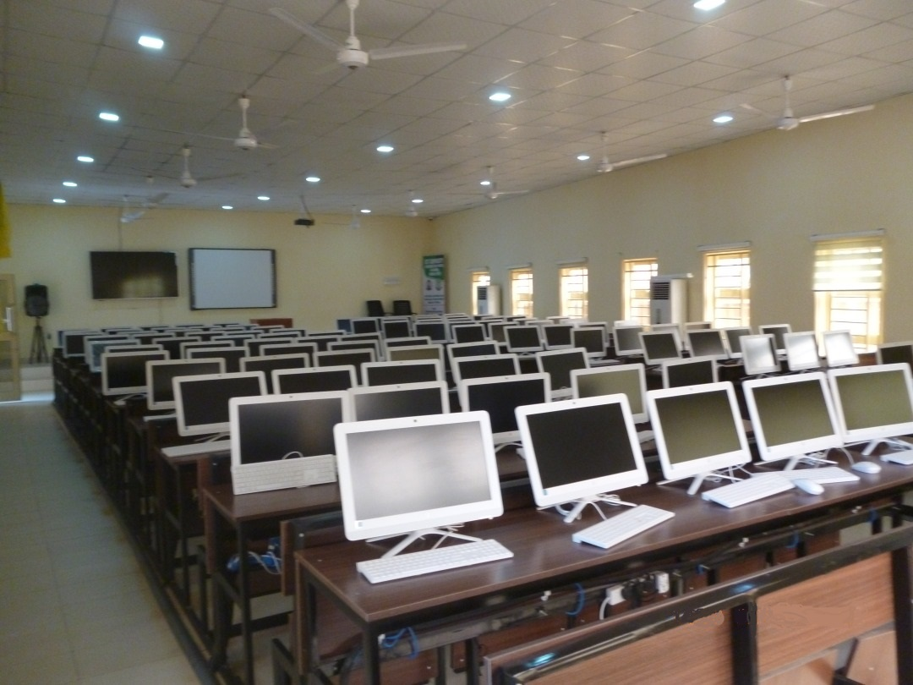
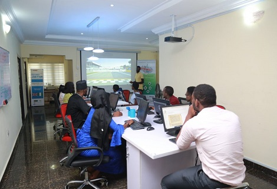

Digital Economy Centres

The project is to give rise to digital skills in educational institutions and rural areas of the country. In addition, Information Technology (IT) knowledge is integrated into the underserved areas and cities so as to develop human capital and provide universal access to knowledge with the aim of creating a knowledge-based economy. A total of nine hundred and eighty-eight (988) centres have been established across the nation between 2007 to 2017.
Objective:
The main objective of DJCC is to create digital job/wealth, develop digital skills, and promote the connection of underserved areas, schools, libraries, and institutions to broadband Internet. The project is aimed at facilitating a digital lifestyle in the institutions, underserved areas (rural), as well as in the communities’ schools. Beneficiaries are expected to share these facilities with their surrounding communities on a commercial basis to support maintenance and ensure sustainability of the project.
Other objectives of this project include:
- To enhance the abilities of communities to access information, manage local level information and disseminate this information to external communities;
- To create an enabling environment that will nurture Innovation and Entrepreneurship;
- To develop training & professional programs to promote self-employment and entrepreneurship;
- To provide & promote professional IT skills to community so that they are equipped with industry-oriented quality education and training;
- To introduce practical computer courses to improve computer literacy of students, teachers, and parents;
- To impart education and training with the aim of generating quality human resources in the IT industry;
- To impart a basic level IT Literacy program for the rural & Semi urban people;
- To offer job-oriented courses like E-commerce, retail management, Web design etc. to enhance IT skill;
- To bridge the gap relative working in neighbouring cities, towns, countries or abroad with those in the rural areas through the Internet and e-mail; and
- To ensure that local small-scale industries have access to information about market prices thus saving on time and travel costs.
E-Learning Facilities
The E-learning platform (also known as a Course Management System (CMS), or Learning Management Systems (LMS), or Virtual Learning Environment (VLE)) comes in a number of editions, designed to assist with the creation of learning communities by offering various opportunities for collaboration and interaction through an icon-based user interface. The platform offers tools for content creation, test building, assignment management, reporting, internal messaging, forum, chat, surveys, calendar, and others.
Objectives:
- Increase access to learning opportunities/increase flexibility.
- Enhance the general quality of teaching/learning.
- Develop the skills and competencies needed, and also ensure that learners have the digital literacy skills required in their discipline, profession or career – or, put simply, to get work in the future.
- Meet the learning styles/needs of millennial students.
- Stay at the leading edge of educational technology developments/digitalize all learning – or put another way, to respond to the technological imperative.
- De-institutionalize learning/to enable self-managed learning.
The project is aimed at facilitating a digital lifestyle in the institutions as well as in the institution communities. Beneficiaries are expected to share these facilities with their surrounding communities on a commercial basis to support maintenance and ensure sustainability of the project.
NITDA Information Technology Hubs

Information Technology (IT) is increasingly recognised as the key enabler in promoting knowledge-based growth, creating jobs and providing access to information and knowledge for both developed and developing countries. Access to information and knowledge can stimulate economic growth by creating new products, increasing productivity and promoting new commercial and administrative methods. IT Hub is one of such ventures that help nations to achieve economic growth through innovation, and entrepreneurship.
IT Hub is a platform where Technology, Business, Innovation and Entrepreneurship are nurtured by building pools of both native and evolving talent and footloose IT professionals. IT Hubs are used in many countries worldwide as a tool to promote the development of both upstream and downstream IT components for economic development across all sectors.
NITDA had identified that there is a clear lack of adequate skilled manpower that will drive local content development and industrialization in the country.
To address and reduce those inhibiting factors, the use of IT Hubs to foster the further development of all sectors has become imperative. To achieve this and also support the primary responsibility of the agency which is regulation and promote the development of the IT sector, it established IT Hubs in strategic locations across the country. This is also seen as another strategic effort to attract and support stakeholders who are industry players toward the promotion of IT for industrialization. Through capacity development programmes at the centres, the country will overcome the shortage of skilled manpower and address the poor business and investment climate which increasingly hamper the growth of the IT sector.
Through the Hub, NITDA tends to provide the right enabling environment by putting in place, a combination of high quality infrastructure, support services. It is expected that the host communities and environs will leverage on the facilities available at the centres and create a full value chain across the IT sector ecosystem.
The Hubs are fully equipped with both networking and computing devices to support the complete state of the art Printed Circuit Boards (PBC) production machines. The centres are expected to develop competency for local production of PCB devices and other downstream components of the IT goods.
Through the use of the IT Hubs, Nigeria is poised to achieve some of the followings among others:
- Diversification of the nation’s economy through local production of IT tools and services.
- Development of strategic thrusts where Technology, Finance, and Human Resources, are going to be harnessed to create an enabling environment for the potential development of microelectronics, Software applications, and Entrepreneurship.
- Create a means of creating a stronger bond between Government, Academia and the private sector by focusing on the development of local talent through research and business ideation and promotion.
- To establish a well Structured IT Hub that will operate along the full IT value chain, from ideation to commercialization, and will be well positioned to help fulfill the expanding economic missions of the country.
- Each Hub will serve as a regional Hub for next-generation IT research and incubation projects, and will also capture value by commercializing IT products and services.
- As a long term objective, the Hub will create self-sustaining ecosystems that will expedite the development of an indigenous IT industry and help Nigeria transform herself into a knowledge-based society.
- Create a local supply for the IT Sector to meet the increasing demand for IT goods and services from both the public and private sectors.
- Generate a steady stream of suitably skilled graduates for companies in the IT Hub to meet the expected high demand for skilled manpower.
The project is aimed at facilitating a digital lifestyle in the institutions as well as in the institution communities. Beneficiaries are expected to share these facilities with their surrounding communities on a commercial basis to support maintenance and ensure sustainability of the project.
Wide Area Network
The main objective of this project is to provide Information Technology (IT) infrastructure to Nigerian tertiary institutions to access broadband Internet and other IT services such as IP telephony and IP surveillance systems. The project is aimed at facilitating a digital lifestyle in tertiary institutions. The Agency has deployed fourteen (14) of these projects at various institutions across the nation between 2015 and 2017.
- To enhance the abilities of higher institutions to access information, manage local level information and disseminate this information globally;
- To create an enabling environment that will nurture Innovation and Academic excellences;
- To enhance the capacity to develop programs that promote self-employment and entrepreneurship;
- To provide & promote professional IT skill to undergraduates so that they are equipped with industry oriented quality education and training;
- To bridge the gap with graduates and undergraduates in neighbouring towns, states, countries or abroad through the Internet and e-mail; and
- To develop of local capacity in the areas of computing, software development and encourage innovation amongst proponents for the development of the Nigerian ICT industry.